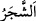
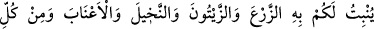
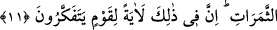

18. Allah’ın nîmetini saymaya kalksanız, onu sayamazsınız. Hakîkaten Allah çok
bağışlayan, pek esirgeyendir.
Üstün kudreti ile “gökten” buluttan yere “suyu” suyun bir türü olan yağmuru “indiren
O’dur.” Bahru’l-ulûm’da der ki: yağmurun bir bölümünü indirir. Çünkü gökten suyun
tamamını indirmez.
“Ondan” bu indirilen sudan “hem size içecek” içtiğiniz su “vardır, hem de
hayvanlarınızı otlatacağınız bitkiler” Yâni o sudan ve o su sebebiyle hayvanların
otladığı bitkiler hâsıl olur. Bu bitkilerden maksad gövdesi/sapı olsun olmasın
yeryüzünden biten tüm bitkilerdir.
İkrime (r.a.)’ın rivâyet ettiği bir hadiste şöyle buyrulmuştur: “(Umuma âid yerlerde
biten) otun parasını yemeyin, çünkü o haramdır.” [127] Hadisteki “
eş-şecer
(ağaç)” kelimesi ile yaş olsun kuru olsun her türlü ot kasdedilmektedir. Satılmasının
haram olması, başka bir hadiste “İnsanlar şu üç şeyde ortaktırlar: Su, ot ve ateş.” [128]
buyrulması sebebiyledir. Ateşte ortaklık korunda değil sıcaklığında ve aydınlığındadır.
Hadiste belirtilen sudan maksad da kaplarda korunan su değil, nehir ve kuyu sularıdır.
Bu gibi arazîlerinden istifâde etmenin çaresi şudur: O yerin bir kısmını kiralayıp oraya
çadır kurar veya koyunları için ağıl yapar. Bu şekilde icâre sahih olur. Mera sâhibi de
ona hayvanlarını güderek istifâde etmesini serbest kılar. Böylece ikisinin de maksadı
hâsıl olmuş olur. el-Kâfî’de böyle geçmektedir.
Olmayan meyveyi satmak câiz olmasa da ağacın yapraklarını satmak câizdir. Bunun da
çaresi, meyve ağaçta ilk görüldüğü anda yapraklarıyla berâber satılmasıdır.
Yapraklarına tâbi olarak meyvenin de satışı câizdir. Nitekim Envâru’l meşârık’da böyle
geçmektedir.
Âyette “eş-şecer (bitki)” kelimesinin önce zikredilmesi, insan irâdesi olmadan
yaratıldığına işâret içindir. Sonra suyun faydaları sayılmaya başlanmıştır. “Suyun
bunlardan başka faydası var mıdır?” diyen kimseye şöyle buyrulmuştur:
11. (Allah) su sâyesinde sizin için ekinler, zeytinler, hurmalar, üzümler ve diğer
meyvelerin hepsinden bitirir. İşte bunlarda düşünen bir toplum için büyük bir ibret
vardır.
Allah Teâlâ, gökten indirdiği “su sâyesinde sizin için ekinler, zeytinler, hurmalar,
üzümler ve diğer meyvelerin hepsinden bitirir.”
Ekin, gıdaların aslı ve hayâtın dayanağıdır. Kâşifî der ki: “
ez-Zer‘den maksad